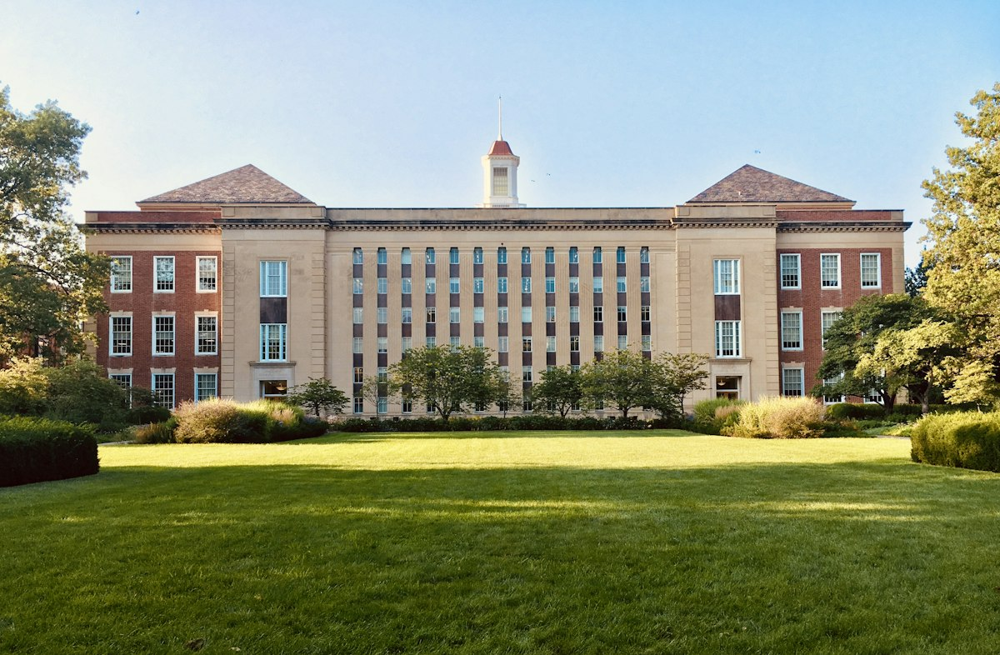
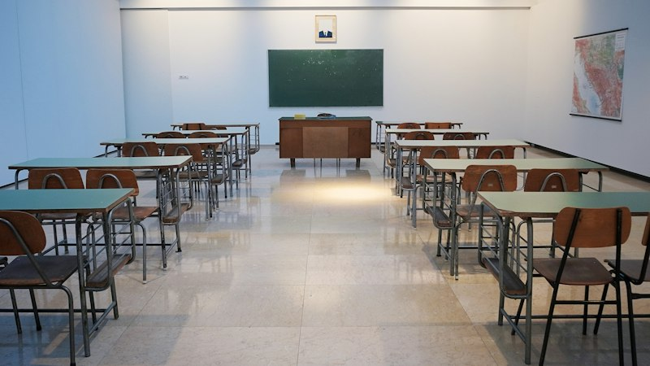
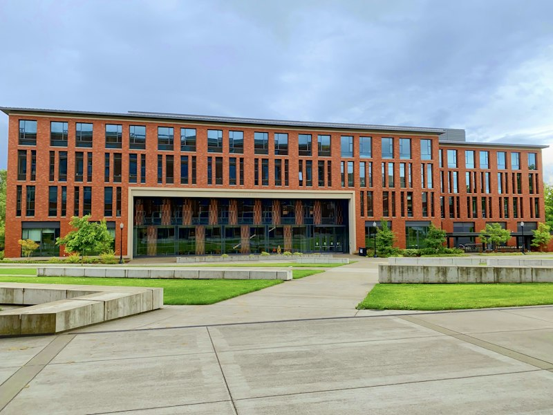

Purpose and Functionality
Consider the building's intended purpose, activities, users, and relationship between spaces to support pedagogical, civic, or administrative goals effectively.

Institutional architecture serves as the enduring spatial foundation for education, public service, community assembly, and administrative governance. Whether designing academic campus buildings, technical training academies, or civic facilities, spatial planning must balance inspiring architectural presence with high-density pedestrian flow, acoustic clarity, universal barrier-free accessibility, and robust life safety.
At Artech Design (Aspirations Architects Engineers), our practice brings more than three decades of integrated architectural planning and structural engineering across Chennai and South India. We design institutional facilities that optimize natural daylight penetration, cross-ventilation, and flexible modular layouts, while coordinating statutory approvals, structural durability, and low-maintenance materials suited to multi-generational public use.
Designing wide circulation spines, multi-portal entries, intuitive wayfinding, and barrier-free access for diverse user groups.
Selecting low-maintenance, resilient materials and robust structural forms that project community dignity and withstand decades of intensive use.
Essential architectural, functional, and statutory parameters that inform durable, inclusive, and forward-looking institutional spaces.
Consider the building's intended purpose, activities, users, and relationship between spaces to support pedagogical, civic, or administrative goals effectively.
Consider movement, accessible routes, wayfinding, entrances, and circulation between different areas to ensure seamless navigation for all visitors and occupants.
Consider flexibility, changing requirements, durability, and practical maintenance needs where relevant to accommodate evolving institutional programs.
Recognise that institutional projects involve building regulations, safety requirements, accessibility standards, life-safety codes, and coordination with technical specialists.
An illustrative overview of potential institutional building categories reflecting our integrated architectural and engineering capabilities.

Schools, university academic blocks, research facilities, and lecture complexes planned for acoustic clarity, natural illumination, and student collaboration.

Specialized vocational training centres, corporate academies, and seminar complexes engineered for adaptable technology integration and interactive workshops.
Civic centres, municipal libraries, cultural institutions, and community gathering halls designed for inclusive public access, civic dignity, and civic events.

Administrative headquarters, research institutes, and campus amenity pavilions providing centralized operational governance and student support services.
A methodical four-stage architectural framework guiding each institutional development from initial brief through to delivery.
Understand the project brief, intended users, site conditions, regulatory framework, and the building's intended purpose.
Explore planning options, master zoning, pedestrian desire lines, and initial design concepts that respond to the project objectives.
Refine the proposed design while considering functionality, accessibility, relevant technical requirements, structural discipline, and coordination needs.
Support the agreed project process through relevant documentation, technical working drawings, and coordinated delivery stages.


Connect with our architectural and engineering team in West Mambalam, Chennai to discuss your campus, educational, or civic facility requirements.